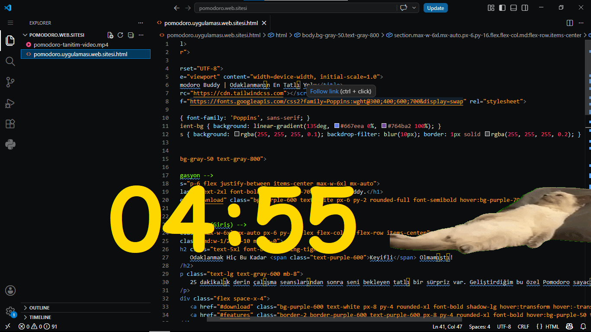

25 dakikalık derin çalışma seanslarından sonra seni bekleyen tatlı bir sürpriz var. Geliştirdiğim bu özel Pomodoro sayacı ile verimliliğini artırırken molaların tadını çıkar.

Klasik Pomodoro tekniği ile beynini yormadan maksimum verim almanı sağlar.
Mola başladığında beliren uykulu dostumuz ve Lo-Fi müzik ile stresini anında at.
Kurulum gerektirmez. .exe dosyasını indir ve hemen kullanmaya başla.
Hemen indir ve odaklanmayı başla.
ŞİMDİ İNDİR (.EXE)Sadece Windows için mevcuttur.